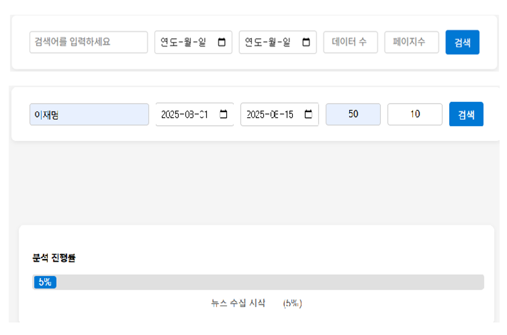

정국호
데이터 분석 & AI
- 🎂 생년월일: 1999년 09월 14일 (만 25세)
- 📞 연락처: 010-4138-5728
- 📧 이메일: mrgjh13579@gmail.com
- 📍 주소: 부산광역시 사상구 주례로
- 🔗 Github: 여기로오세요~
- 🎖️ 병역: 육군 병장 만기 제대
(2019.03.04 - 2020.10.07) - 💡 소개: 호기심과 열정으로 데이터의 깊이를 탐색하는 데이터 사이언티스트 입니다.
AI 기반 뉴스 요약 및 토픽 분석 서비스
프로젝트 주제
복잡한 뉴스 속에서도 핵심 이슈와 트렌드를 빠르고 정확하게 파악할 수 있는 서비스 개발
프로젝트 정보
- 프로젝트 일정 : 2025.08.08 ~ 2025.08.27
- 프로젝트 인원 : 4명
- 개인 기여도 : 50% (코드 작성, 기능구현, 모델 학습)
- Backend: Python, Flask, Flask-SocketIO
- Frontend: HTML, CSS, JavaScript
- NLP & Data Analysis
- Transformers (Hugging Face): 뉴스 요약
- Mecab: 한국어 형태소 분석
- Scikit-learn: 토픽 모델링 (LDA)
- WordCloud: 데이터 시각화
- Crawling: Selenium, BeautifulSoup4
주요기능
- 실시간 뉴스 데이터 수집: 사용자가 입력한 키워드와 기간에 맞춰 네이버 뉴스 데이터를 실시간으로 크롤링.
- AI 기반 자동 요약: Transformers 라이브러리의 요약 모델을 활용하여 각 뉴스 기사의 핵심 내용을 자동으로 요약.
- 토픽 모델링 및 분류: Mecab과 Scikit-learn의 LDA 모델을 사용하여 수집된 뉴스들을 주요 주제별로 자동 분류.
- 데이터 시각화: 각 토픽별 핵심 키워드를 시각적으로 보여주는 워드클라우드 자동 생성.
- 실시간 처리 과정 시각화: 데이터 수집부터 분석까지의 전 과정을 프로그레스 바로 시각화하여 사용자에게 실시간 피드백 제공.
시도한 모델
- KoBert 기반 요약 모델
- T5-small 모델
- T5-base 모델
최종 모델 - T5-base모델
허깅페이스 내 추출 모델을 통해서 크롤링 데이터를 내용을 추출 진행 후 eenzeenee/t5-base-korean-summarization에서 파인 튜닝을 진행
최종 모델 선정 이유
- KoBert -> 긴 입력 토큰을 처리할 수 있는 장점이 있었으나, 실제 요약 결과물의 성능이 다소 불안정함
- T5 -> T5 모델은 "요약:"과 같은 접두사(prefix)를 입력해야 하는 제약이 있었지만, KoBERT에 비해 일관성 있고 높은 품질의 요약문을 생성
- small -> Base -> small은 Kobert에 비해 높은 성능을 보여주지만 일반화 능력과 충분한 리소스가 있기에 T5-base모델로 최종 선정함
문제점
같은 기자가 같은 내용의 뉴스를 3~4개씩 작성하여 데이터 중복 발생
해결방법
기자 별 또는 같은 언로사별로 그룹핑 후 유사도를 구한 후 중복 뉴스를 제거하는 방식으로 구현 예정
최종 인사이트
- 많은 뉴스를 수집 및 분석을 하는 과정에 오랜 시간이 소모하여 유저가 오랜 시간을 머물러야 하는 문제점이 존재함
- 하지만 이는 데이터베이스와 연결하여 이전에 검색한 기록을 다시 볼 때는 바로 확인이 가능하도록 구현 예정
서비스 구조

Index.html

result.html